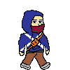
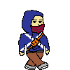
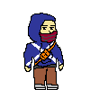
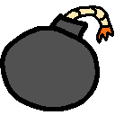
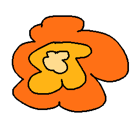
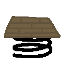

UCSD 2024 Tritonware showcase
This is a mini game that I developed together with a smal group during the Tritonware event of the Video Game Development Club in UCSD. This is the first game program I ever participated in developing and it's a good experience. The game was a very simple two-dimentional endless runner video game like Subway Surfers. I was responsible for creating the character design and some other background arts and assects for the mini game, while the two other group members worked on making the program and coding as well as some other assects in the game.
Below are some of the assects that I made for the game
  
These are the character apperances when performing different movements, for example, when standing still, walking, jumping, etc.
Me and the two other group members that were actually participated in the game development were inspired by the characters in the famous game series Assassin's Creed as well as other game character designs, and decided to create a pixel art character wearing jacket and mask. And the environment in the game was set to be on the rooftops of buildings in a city, the character will face obsticles and all sorts of props during the game when running forward jumping from buildings to buildings./p>
Below are the game background assects from the minigame that were created by me and other group members
  These are the assects for the obsticles that the character will face in the game, the bomb will blow the character up high, which can be either beneficial in helping the character get over the space between buildings, or it can cause the character to fall right into the spaces between buildings., the ramp and the spring both helps the character to jump higher and further to get over larger spaces between some buildings during the game.
Unfortunally, because the group for the Tritonware event was assigned at random, initially my group has 6 members, but 3 of the members ended up never showing up for any of the game developing workshops and discussion, and also didn't contribute to any of the game's actual development. It was only me and two other members that were still working on the game. And because of the bad situation of our group, the final product wasn't as good as it could be, and unfortunally the original game program was lost and I couldn't show more of the game other than the remaing game assects we created.